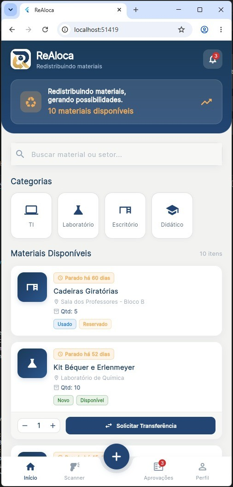
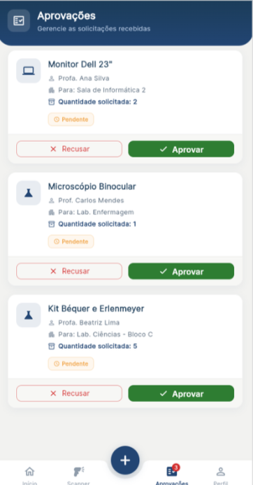

📦
Materiais ficam sem utilização
Cadeiras, monitores e kits de laboratório passam meses parados em um setor.
O ReAloca conecta quem tem material parado a quem precisa dele. Cadastre, encontre e solicite itens entre setores, direto do celular.

Cadeiras, monitores e kits de laboratório passam meses parados em um setor.
Descobrir se alguém tem o item exige mensagens, ligações e sorte.
Cada setor controla seu estoque do seu jeito, sem visão do todo.
O resultado: compras repetidas e dinheiro público gasto à toa.
Toque em uma etapa para ver o que acontece.
Desenvolvido em Flutter e Dart: um único código roda no celular, no navegador e no computador.

Comunicação automática sobre movimentações e solicitações.
Controle sobre pedidos de realocação, com opção de aprovar ou recusar.
Localiza recursos parados para estimular a reutilização.
Transfere vários itens simultaneamente, agilizando o processo.
O Click.Base cuida do inventário. O ReAloca responde a outra pergunta: quem mais pode usar isso agora?
| Recurso | Click.Base | ReAloca |
|---|---|---|
| Inventário e controle de bens | ✓ | ✓ |
| Encontrar material em outro setor | — | ✓ |
| Alerta de itens ociosos | — | ✓ |
| Solicitar e aprovar pelo app | — | ✓ |
“—” = não destacado na descrição pública do Click.Base.
Deixe seu contato e avise sua instituição: teste o ReAloca e veja quanto já existe parado ao seu redor.